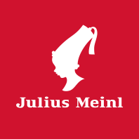

Julius Meinl modern logo ☕
The Man Who Revolutionized Coffee
You can find more about the history of Julius and his coffee shop here
You can find more about the history of Julius and his coffee shop here
Julius Meinl I. opens a spice shop in downtown Vienna, where he sells green coffee beans, cocoa, tea, spices, rice and sugar.
Julius Meinl I. revolutionises coffee roasting with a process he developed. The beans no longer come into contact with coal.
The company headquarters moves to the 16th district of Vienna. (The street was later named after Julius Meinl II in 1954)
Julius Meinl is the largest coffee roaster of the Austro-Hungarian Empire and largest importer of coffee and tea in Europe.
Designer Joseph Binder creates the Meinl logo, which becomes the iconic label and the trademark of the company.